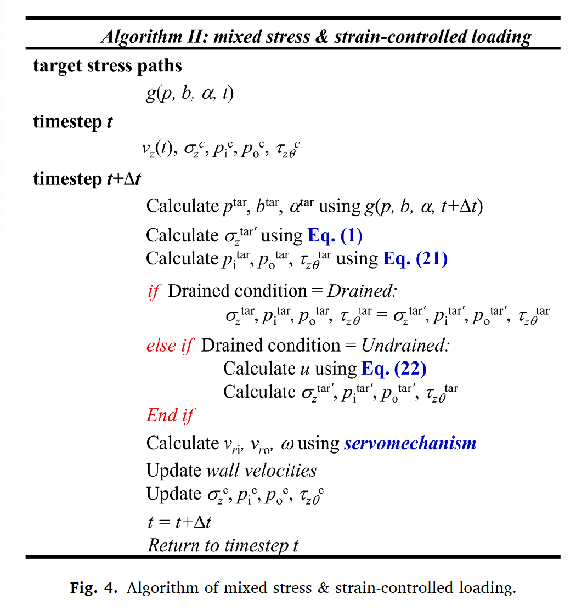
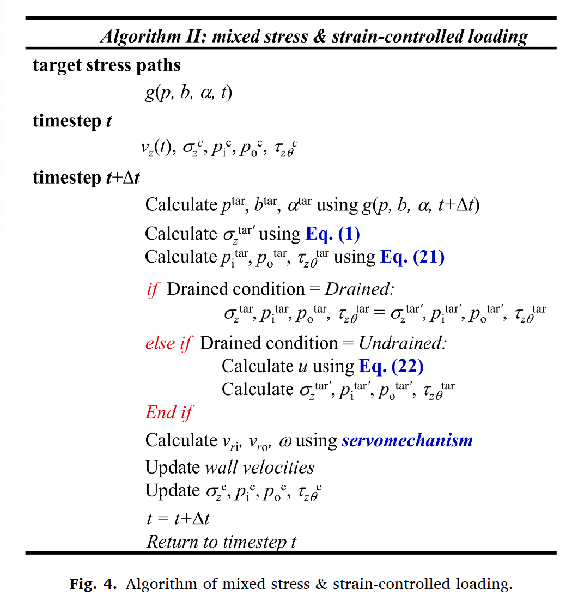
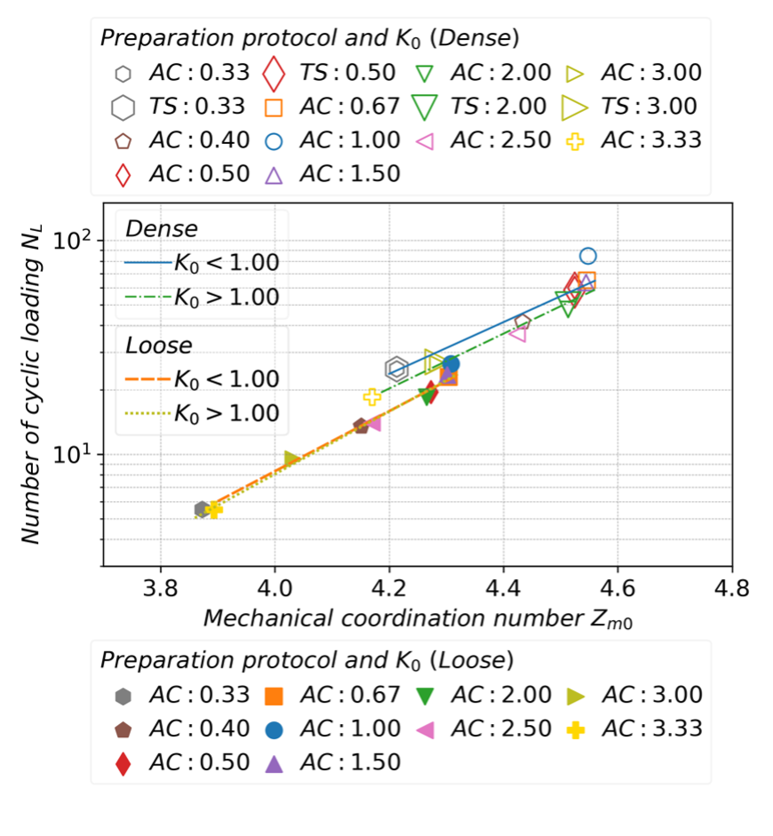
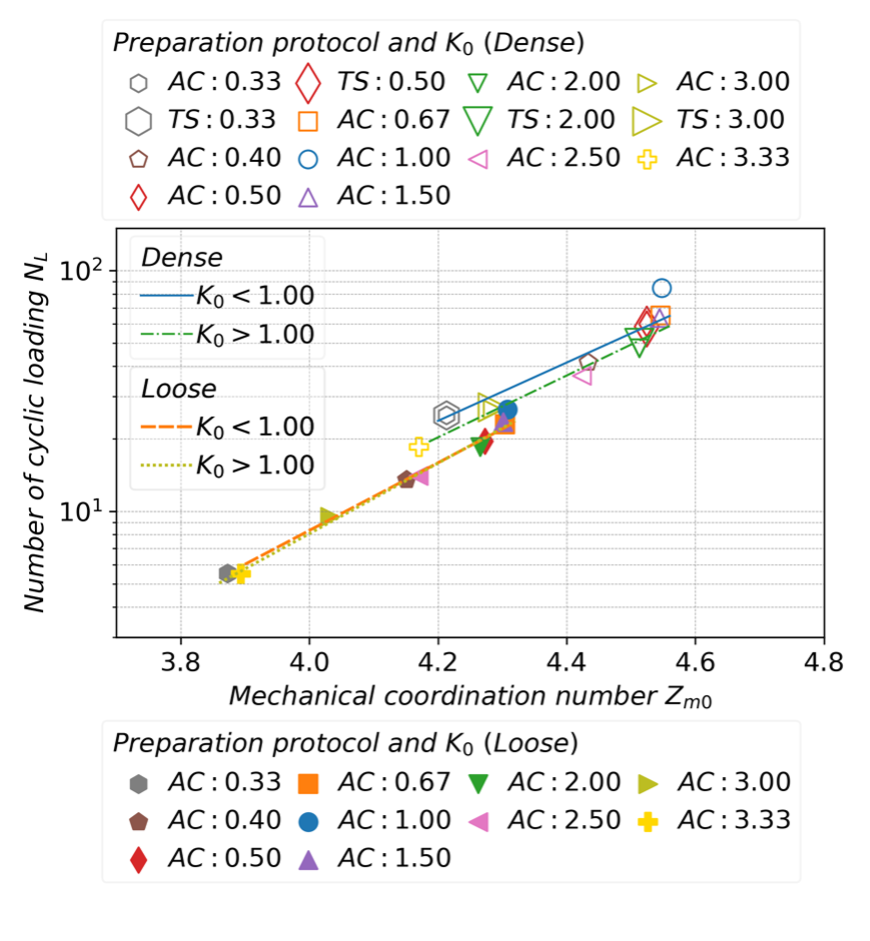
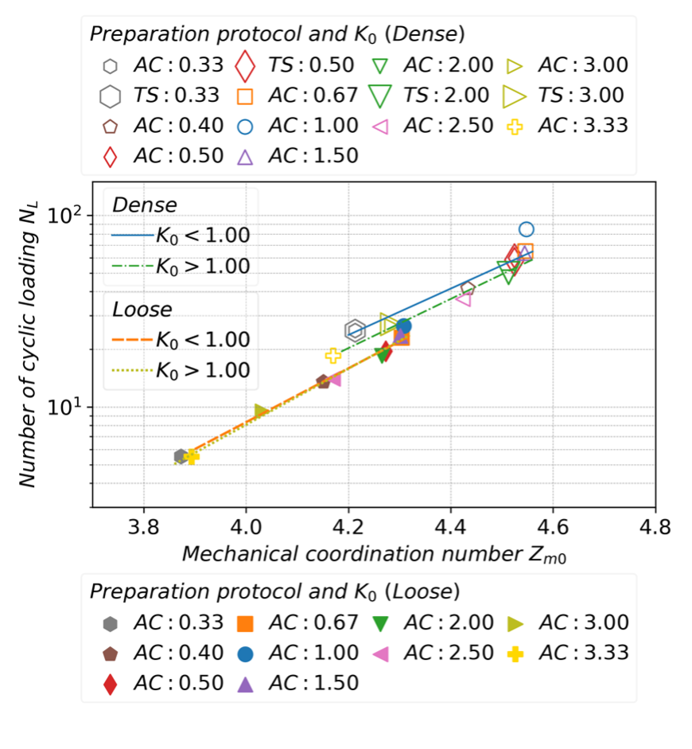

Particle displacement and interparticle force

Combined servo-mechanism for achieving undrained HCA simulation in DEM
Particle displacement and interparticle force

Combined servo-mechanism for achieving undrained HCA simulation in DEM
 K0 effects on liquefaction

Relationship between coordination number and
K0 effects on liquefaction

Relationship between coordination number and
K0 effects on liquefaction  Relationship between coordination number and